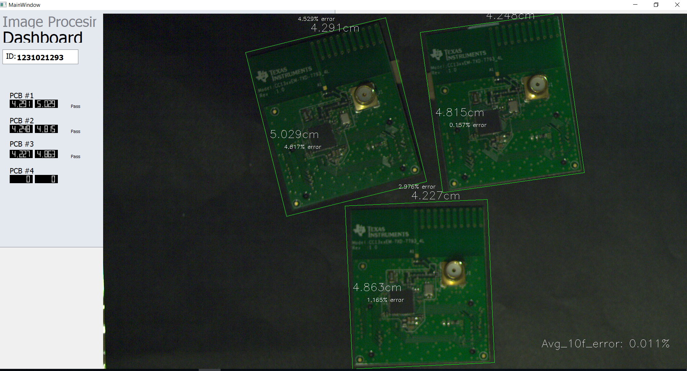

A Basler acA1920-150uc model with a computar M1620-MPW2 lens was used to develop a prototype to detect chips that don't conform to specified dimensions on a conveyer belt.
OpenCV and Pillow libraries were used to process the images sent by the camera. Referencing the Basler camera's specification, a pixel per cm scale can be established using reference chips that have been measured beforehand.